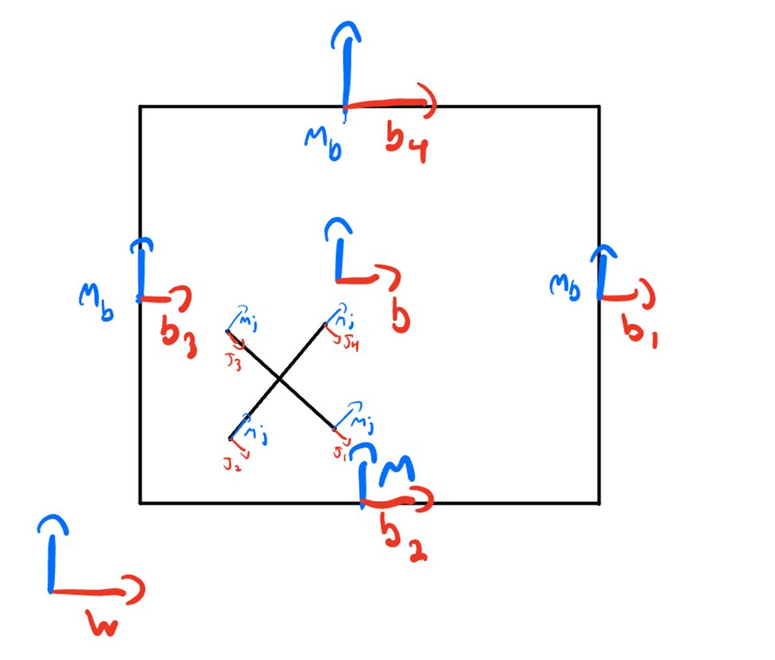
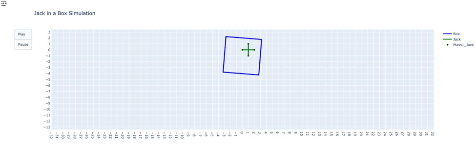

08 — Rigid Body Dynamics · ME 314
A multi-body rigid body dynamics simulation of a jack bouncing inside a box — Euler-Lagrange formulation with six degrees of freedom, impact constraints via Lagrange multipliers, Hamiltonian energy conservation, and external forcing, animated in real time with Plotly.
Objective
The jack-in-a-box system involves two rigid bodies, multiple simultaneous contact constraints, impacts with velocity jumps, external forcing, and orientation tracking across several reference frames. The goal was to formulate the equations of motion correctly using Lagrangian mechanics, implement a numerically stable integration scheme that handles impacts as discrete events, and animate the result in real time.
System Setup
The system has six generalized coordinates: xb(t), yb(t), θb(t) for the box, and xj(t), yj(t), θj(t) for the jack, where each θ is a rotation about the world-frame z-axis. World-to-box (gwb) and world-to-jack (gwj) homogeneous transforms were defined. Local offsets bi define the four box walls; ji define the four jack corner points. The signed distance between each jack corner and each box wall defines the contact condition φ — contact occurs when φ crosses zero.
External forcing drives the simulation: horizontal force Fx = 300·sin(2πt/3), torque τ = 45000·sin(2πt/3), and a constant lift force counteracting gravity. This creates the "shaking" motion of the box while the jack bounces inside under gravity.

Reference frame diagram — world frame (w), box wall frames (b1–b4), jack corner points (j1–j4)
Formulation
Velocity vectors Vb and Vj were extracted from the time derivatives of the transforms using an unhat function. Inertia matrices Ib = diag(mb, mb, mb, 0, 0, Jb) and Ij = diag(mj, mj, mj, 0, 0, Jj) gave the kinetic energy T = ½VbᵀIbVb + ½VjᵀIjVj. Potential energy V = g(mbyb + mjyj). The Euler-Lagrange equations d/dt(∂L/∂q̇) − ∂L/∂q = F were solved symbolically in SymPy for the six accelerations, then lambdified for numerical integration.
For impact handling, the constraint Jacobian ∂φ/∂q̇ was computed symbolically. The Hamiltonian H was evaluated before and after impact. Post-impact velocities were found by solving the impact equations — the system of equations formed by the difference in pre- and post-impact Hamiltonian values and Lagrange multiplier λ — choosing the solution where λ is nonzero. This ensures energy conservation is enforced correctly at each collision event.
The simulate_impact function runs a RK4 integration loop, checking φ at every step. When any entry crosses zero, the velocity is reset via impact_update before integration continues — capturing both continuous motion and discrete collision events.
Simulation Results
The animation correctly shows the box rotating clockwise in response to the applied torque — simulating a person shaking the box. The jack initially drops under gravity. When it contacts the bottom wall, the impact equations correctly produce a velocity reversal with angular acceleration — the jack begins to tumble. The box slowly translates downward as the constant lift force representing a person holding it gradually becomes insufficient against gravity over time.

Plotly animation frame — blue box outline, green jack cross, mid-bounce. Play/Pause control allows stepping through the trajectory.
Reflection
Consistent reference frame bookkeeping is foundational. A single coordinate transformation error compounds through every subsequent calculation. Getting the frame definitions right before writing a single line of integration code — and verifying them against hand calculations — saves enormous time.
Impact events must be handled as discrete resets rather than continuous forces. Splitting the integration at each collision and restarting with post-impact initial conditions — computed from the Hamiltonian impact equations — is the physically correct approach. Treating impacts as continuous forces produces numerically unstable solutions.
Visualization revealed a subtlety the equations alone did not: at certain initial conditions, the jack simultaneously contacts two box walls. This required a more complex impact resolution than single-wall contact. Seeing the failure mode in the animation led directly to the fix — a reminder that simulation is a debugging tool, not just a presentation tool.